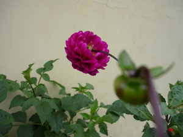
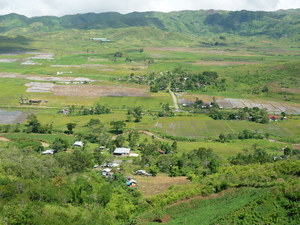

upiya  
/ʔupia/
adj_rt.
“good”
1.
v.
for something (egkeupiya, neupiya, keupiya, agent, egkA><ø-) to be more good (igkeupiya, ingkeupiya, ikeupiya, reason, igkA><ø-)
Eng. more good; better
Online dict status: -
Usage level: B
v.
for something (egpekeupiya, nakeupiya, pekeupiya, agent, egpAkA-) that can improve or to be able to improve someone or something (igpekeupiya, impekeupiya, reason, igpAkA-)
Eng. improve, can; improve, able
Online dict status: -
Usage level: M
2.
adj.
(meupiya, mA1-) good; excellent; dignified
Meupiya ne eg-unturan ka eriplanu su egpakapanlewlew ki te langun ne inged.
It is good to board an airplane because we can looked over the whole country.
Ceb. +Maganda ang eroplanong sakyan dahil matatanaw natin ang lahat na lugar.
Tag. +Maayo ang eroplano nga sakyang kay makit-an nato ang tanan lugar.
Eng. good; excellent; dignified; best; fine; graceful; glorious
Tag. maganda; magalíng
Ceb. maayo
OCM: Norms (183)
DDP: Good (8.3.7)
Online dict status: -
Usage level: B
3.
adj.
(meupiya, mA1-) good; moral
Masalig ka alukuy ni Rik su meupiya ma ka batasan din.
Ric has many friends because his character is good.
Tag. Maraming kaibigan si Ric dahil +maganda ang kanyang ugalì.
Ceb. Daghan ug amigo si Ric kay +maayo siya ug batasan.
Eng. good; moral
Tag. mabúti; maganda
Ceb. maayo
Ilo.: nasayáat nga kababalín
OCM: Norms (183)
DDP: Good (8.3.7)
Online dict status: -
Usage level: B
4.
adj.
(meupiya, mA1-) satisfactory
Meupiya ne egtengtengan ka katalunan su duè mateles ne me bulak.
It's nice to be looked around the forest for there are various kinds of flowers.
Ceb. +Magandang pagmasdan ang kagubatan dahil may magagandang bulaklak.
Tag. +Nindot lantawon ang kalasangan kay naay mga maayong bulak.
Eng. satisfactory; nice
Tag. nakasisiyá; kasiyásiyá; maganda
Ceb. nakapahimuot; nindot
Ilo.: makapnék
OCM: Norms (183)
DDP: Good (8.3.7)
Online dict status: -
Usage level: B
5.
adj.
(meupiya, mA1-) clean
Migmasakit ka getek ku su nekeinum a te kenè ne meupiya ne weyig.
My stomach is aching because I drunk unclean water.
Ceb. Masakit ang tiyan ko dahil nakainom ako ng hindi +malinis na tubig.
Tag. Sakit ang akong tiyan kay nakainum ko ug dili +limpyo nga tubig.
Eng. clean
Tag. malínis
Ceb. limpiyo
Ilo.: nalínis; nadalús
OCM: Water and Thirst (271), Housekeeping (356), Personal Hygiene (515), Theory of Disease (753)
DDP: Be in water (1.3.4)
Online dict status: -
Usage level: F
6.
adj.
(meupiya, mA1-) pretty; attractive
Meupiya ka ulaula rin.
Her face is pretty.
Tag. +Magandá ang kanyang mukha.
Ceb. +Guwapa ang iyang nawon.
Eng. pretty; attractive; gorgeous; elegant
Tag. magandá
Ceb. guwapa
OCM: Sensation and Perception (151)
DDP: Attract (3.4.1.4.4)
Online dict status: -
Usage level: F
7.
adj.
(meupiya, mA1-) happy; peaceful
meupiya se geyinawa
peaceful in love
Eng. happy; peaceful; contented
Tag. masayá; maligáya; natútuwâ; kasíyáhan; nalúlugód
Ceb. malipayon; kuntintu
Ilo.: narágsak
OCM: Drivers and Emotions (152)
DDP: Feel good (3.4.1), Contentment (3.4.1.1.6), Happy (3.4.1.2), Calm (3.4.1.2.2)
Online dict status: -
Usage level: F
8.
adj.
(meupiya, mA1-) convenient; orderly; polite
Eng. convenient; orderly; polite
Online dict status: -
Usage level: F
9.
adj.
(meupiya, mA1-) expert; fluent
Eng. expert; fluent
Online dict status: -
Usage level: F
10.
adj.
(meupiya, mA1-) fit; effective
Eng. fit; effective; splendid
Online dict status: -
Usage level: M
adj.
(meupiya, mA1-) well, a feeling
meupiya se lawa
well in body
Eng. well; healthy
Tag. malusóg
Ceb. hímsog
Ilo.: nasalún-at
OCM: Sensation and Perception (151), Theory of Disease (753)
DDP: Healthy (2.5)
Online dict status: -
Usage level: M
11.
???.
hello
meupiya na maselem
good morning
Eng. hello; goodday; hi
Online dict status: -
Usage level: F
12.
n.
(keupiyaan, kA><an-) good
keupiyaan ney
our good
Eng. good
OCM: Cultural Goals (185)
Online dict status: -
Usage level: M
13.
adj.
(uupiyanen, rdpCV–nen) desirous
Eng. desirous
Online dict status: -
Usage level: R
adj.
(meupiya, mA1-) lovely; loyal; well
Eng. lovely; loyal; well
Online dict status: -
Usage level: M
v.
for something (egmeupiya, immeupiya/migmeupiya, meupiya, agent, eg><ø-mA1-) to become good or fine (egmeupiyeen, immeupiya/migmeupiya, patient, eg><en-mA1-)
Egmeupiye e ka batasan din su duen e asawa rin.
His atttitude will become good because he has already wife.
Egmeupiya ka langun ke egpabulbulihey ki.
Everything will be fine if we will cooperate each other.
Eng. become good; fine; improve
DDP: Good (8.3.7)
Online dict status: -
Usage level: M
v.
for something (egpakameupiya, nakameupiya, agent, egpAkA-mA1-) to do good
Egpakameupiya kanta ke egpabulbulihey ki te himu.
It can do good for us to help each other to our work.
Eng. do good
Online dict status: -
Usage level: R
14.
adv.
(meupiya, mA1-) thank you
Eng. thank you
Online dict status: -
Usage level: M
adj.
(uupiyei, rdpCV–i) most beautiful
Uupiyei ka mengebay ne lelewag diyè te taheinep ku.
Most beautiful lady is the caretaker of wild animal that I've seen in my dream.
Eng. best; more beautiful
DDP: Beautiful (2.3.1.8.1)
Online dict status: -
Usage level: M
adj.
(kinameupiyaan, kina-mA1–an) most beautiful
Eng. most beautiful
Online dict status: -
Usage level: M
15.
adj.
(nakameupiya, nAkA-) advantage
Ka nakameupiya te seini ne pamaahi su lelemuwi ne eggimuwen.
The advantage of this method is so simple to work out.
Eng. advantage
Online dict status: -
Usage level: M
Updated by: RJH,TME,AAA,RUL,NJK,NJK,QDL,RAA,RAA
Last updated: 05/Aug/2019
"Meupiya" in text "Pegpanumbaley diye te baley"
"Meupiya" in text "Pegpanumbaley diye te baley"
"Meupiya" in text "Pegpanumbaley diye te baley"
"meupiya" in text "Ke due masakit"
"meupiya" in text "Te pegkeen"
"Meupiya" in text "Te pegkeen"
"Meupiya" in text "Eg-untud te diip"
"Meupiya" in text "Diye te iskwilaan"
"Meupiya" in text "Due daruwan lukes ne nekegsinug-ung diye te dalan"
"egpakameupiya" in healthbook "Mania teg pakapatey kag iindes?"
"meupiya" in healthbook "Keilangan ka meupiya neg kakeen"
"egmeupiya" in healthbook "Keilangan ka meupiya neg kakeen"
"meupiya" in healthbook "Keilangan ka meupiya neg kakeen"
"meupiya" in healthbook "Keilangan ka meupiya neg kakeen"
"meupiya" in song "Minsan egkaangken ku ka kalibutan"
"Meupiya" in song "Meupiya ne egsalihan"
"meupiya" in song "Meupiya ne egsalihan"
This page last updated: 03-Jan-2020
Copyright © 2009-2014, Matigsalug Language Christian Association, Inc